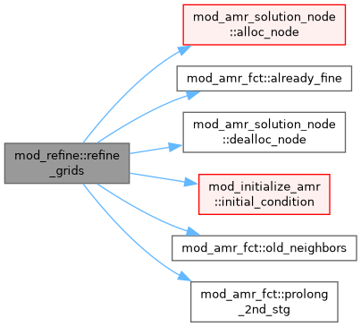

mod_refine Module Reference
Functions/Subroutines | |
| subroutine, public | refine_grids (child_igrid, child_ipe, igrid, ipe, active) |
| refine one block to its children blocks | |
Function/Subroutine Documentation
◆ refine_grids()
| subroutine, public mod_refine::refine_grids | ( | integer, dimension(2^d&), intent(in) | child_igrid, |
| integer, dimension(2^d&), intent(in) | child_ipe, | ||
| integer, intent(in) | igrid, | ||
| integer, intent(in) | ipe, | ||
| logical, intent(in) | active ) |
refine one block to its children blocks
Definition at line 12 of file mod_refine.t.
Here is the call graph for this function:

Generated by